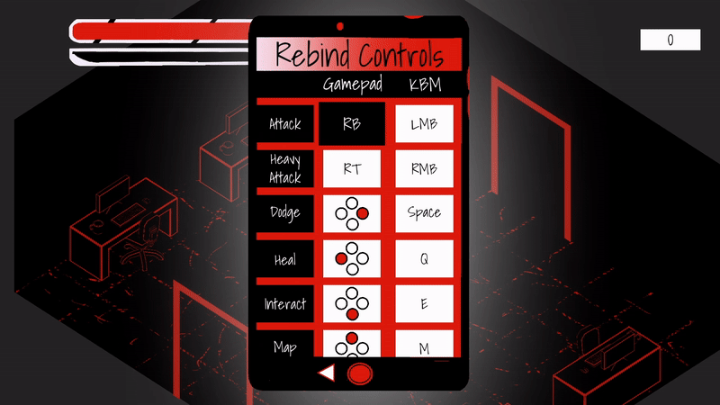

Jacob Davis
Arcane Audit
I co-founded a small indie video game studio called Broken Beaker. We are currently working on our first game, called Arcane Audit. While this project may not be directly related to web development, this is the project where I learned the majority of my programming knowledge and skills. A project of this scale, with 250+ scripts written over the course of multiple years, has required me to learn good OOP practices and write my code with scalability and performance in mind.
GitHub Page:
https://github.com/WickerPrison/ArcanacideThis game was built in the Unity game engine using C# and HLSL.
I am the lead developer on this project, working with an artist and a composer. I wrote all of the C# code and the HLSL shaders. I also made all the sound effects myself.
A Full-On Video Game
We made a video game. The game has a story, multiple levels, and takes several hours to complete. Watch the trailer below to see the game in action.
Progression Systems
I used C# to code multiple progression systems to allow the player to gain strength and abilities over the course of the game. I programmed a system for gaining and equipping 25+ different “patches” that each give the player abilities. I programmed a complex move set for 4 different weapons.

Rebindable Controls
The most technically challenging code I wrote for this game was the ability for players to change which buttons do which things. Players can remap any button to any action and this change will be reflected in button prompts throughout the game. This remapping system is compatible with keyboard and mouse and controllers made for Xbox, Playstation, Switch, and most generic brand controllers.
Enemy AI / Abilities
The game features nearly 20 enemy types and 4 bosses, each with their own AI tree and unique abilities that I programmed in C#. Below are a few examples.

Shaders
I also wrote shaders in HLSL to create visual effects for the game. I wrote a shader to swap the colors in assets to match the current scene so we didn’t have to create multiple versions of each asset. I also wrote shaders for effects like making the enemies flash white when they get hit and dissolve after they die or improving the look of the player’s block ability.